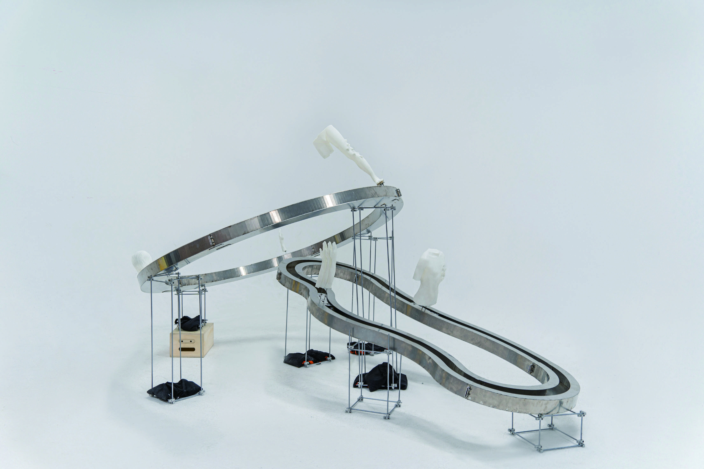
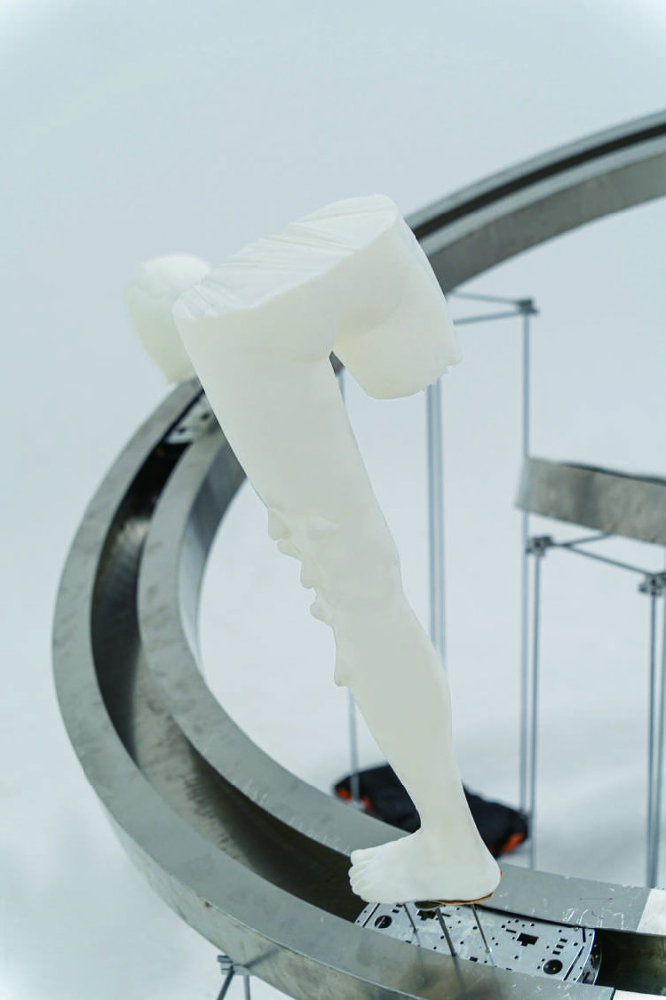
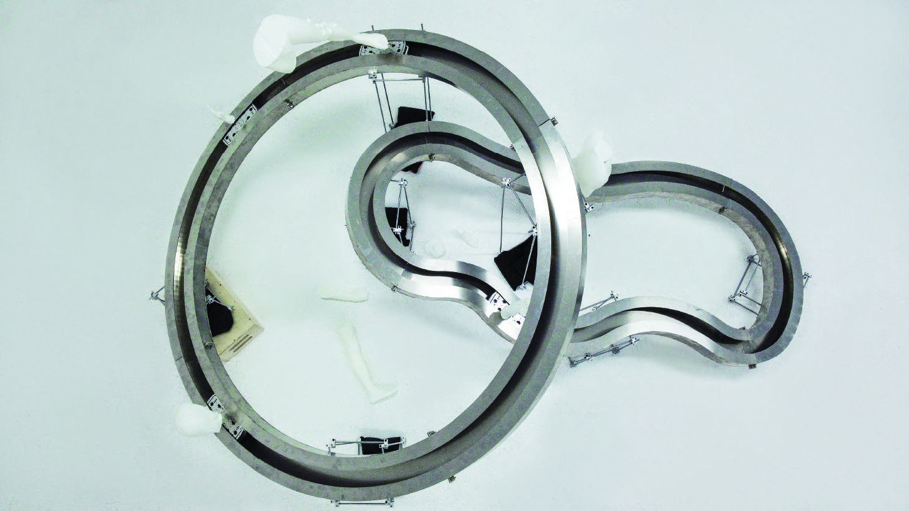
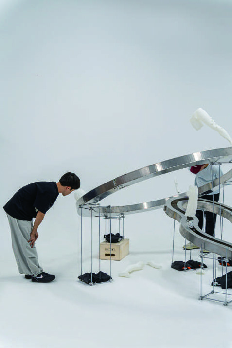
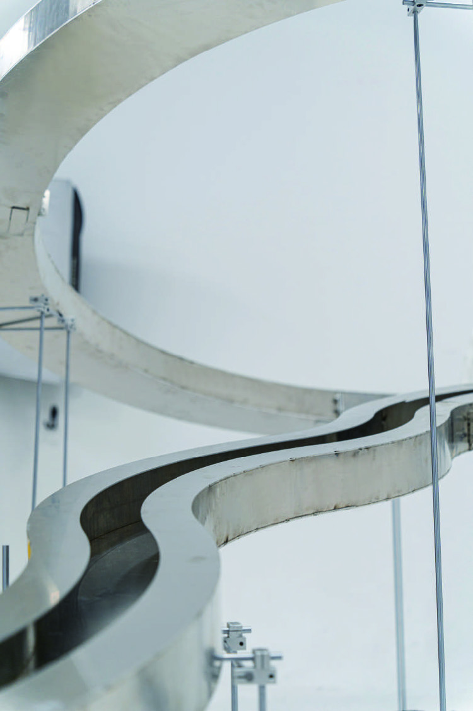

装置
Self-Wilful / 自我任性
緻密な計算によってインスタレーションを組み立てる確立された方法は、壮大に定められた運命を象徴し、動きながら体の組み立て姿は、人間の主観や葛藤を象徴している。
両者は互いに比較され、同時に動きながら、おそらく決定された運命の枠組みと、人間の主観的な行動の自由意志との関係、人間のすべてが本当に運命の枠組みの中で固定されているのかどうかを探る。
よく人々が「努力すれば何かを得られる」と言うのを聞くことができ、成功者たちも自分の成功の合理性を主張するために自分の努力を提唱するのが好きですが、努力は本当にすべてを得ることができるか。私はかつて工場で生活を体験した際、毎日朝起きて一生懸命働いている人を見る、彼らは本当に生きるために一生懸命働いている。
私も学生時代、一生懸命勉強しても目標を達成できない人がたくさんいた。デザインや創作活動をしていても、既存の枠をどう突破するかということをよく考えていたのだが、気がつくと内在する社会の枠や運命の枠にとらわれていた。だから、努力というのは幻想なのかもしれない。自由意志による決断によって、自分の運命の軌跡をコントロールするという幻想なのかもしれない。
上下スクロールで移動

自由意志は個人の自由を強調するが、人類の個々の運命は社会の不断の規律技術と個人の形成によって、また各個人が社会的・経済的ニーズに適合するように人間個人を形成することによって形作られるものである。
規律の痕跡は、社会ネットワーク内の「リンク」によって生まれ、ソーシャルネットワークや社会組織、個人に影響を及ぼす。このネットワークの影響から逃れることは難しく、オンラインの社交や社会組織、私たち自身の神経ネットワークにまで広がっている。

生活には多くの選択肢があるように見えますが、実際にはすでに設定されており、人々は既定の道を辿っているに過ぎません。表面的な自由は容易に手に入らず、外部の社会規則だけでなく、内面の自己制約も生活に影響を与え、自由を追求する過程で見えない枷に囚われてしまいます。
日常生活の明示的なルールと暗黙のルールが、私の日常の動きのルートを共に設計しています。円（サークル）は、私たちの生活の中で無所不在の権力の象徴を構築し、権力と規律に満ちたシンボル社会を形成しています。

現代社会では、人間の身体と精神は異なる部分に分割され、その一部は社会システムによって利用される。表面的には、私たちは自分の身体をどう使うかを自由に選べるように見えますが、実際には、私たちはすでに機械の部品のように完全に分解されています。
工業化社会における人間の身体は、機械と同じように使用され、分節化されてきた。人は生まれながらにして歩き方を知らず、訓練や学習を受けてから徐々に自分の身体をコントロールできるようになり、その身体は訓練の形の提示である。
レール全長・高さ・傾斜角度・接合部の寸法を精密に定義し、工場での加工に対応した施工図を作成。第一層（円形 φ2000mm）・第二層（インゲン型 1996×1205mm）・第三層（傾斜レール）それぞれの断面形状と接合方法を明示した。
ステンレス鋼（SUS304）の曲げ加工と精密溶接によってレールフレームを制作。各軌道を個別に加工し、精密に組み合わせた。
溶接後グラインダーで研磨し鏡面仕上げに。継手と支柱によって三層の高さ関係を固定し、展示空間での設置に対応した構造を実現。
駆動ボードとモーターを組み込んだ自走式の台車が、レール上を永続的に循環する。台車の上には身体部位（石膏・3Dプリント製）が搭載され、延々のループを描き続ける。
ライントレースセンサーを用いてレールの軌道を検知し、自律的にルートを辿る。バッテリー駆動による安定した連続稼働を実現した。










